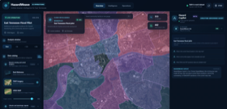
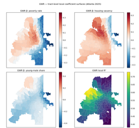
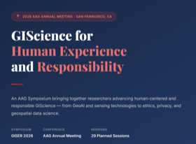
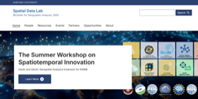

Research in motion
Observe.
Connect signals across
people and place.
Remote sensing, street-view imagery, mobility, environmental monitoring, and population-scale digital traces.
Transparent. Equitable. Human-centered.
The 3D landscape is unavailable in this browser. Select a topic below to explore the research.
GRIND Lab
Geospatial Responsible AI for Nature-human DynamicsAt the University of Tennessee, Knoxville, the GRIND Lab develops responsible geospatial AI to understand how people, places, and natural systems interact under environmental change and disaster risk. Our work connects GeoAI, remote sensing, spatial data science, resilience, equity, and health to build more trustworthy tools for science and society.
Research Focus
Responsible GeoAI
Designing fair, explainable, and trustworthy geospatial AI models that account for spatial heterogeneity and social equity in predictions.
Remote Sensing & Earth Observation
Leveraging multi-source satellite imagery (SAR, optical, LiDAR) and deep learning for land cover mapping, change detection, and disaster monitoring.
Disaster Risk & Resilience
Developing predictive and post-event models for wildfire, flood, hurricane, and compound hazards, with a focus on community resilience and recovery.
Coupled Nature-Human Systems
Studying how human activities and natural processes interact across spatial and temporal scales to generate and amplify socio-environmental risks.
Spatial Data Science
Advancing methods for spatial statistics, graph neural networks, and spatio-temporal modeling to extract knowledge from complex geospatial datasets.
Environmental Justice & Equity
Examining how environmental hazards and climate change disproportionately affect marginalized communities, and developing equitable GeoAI solutions.
Latest News
All news-

HazardWeave receives AI-Tennessee THRIVE support
The award supports a platform that brings hazard maps, geospatial data, and decision tools together for disaster management.
-

NORA: An autonomous agent for spatial data science
The preprint introduces a research agent that can plan a spatial analysis, run it, and report its findings.
-
Bing Zhou chairs GeoAI for Disaster Resilience at AAG 2026
The San Francisco session brought together researchers using GeoAI and deep learning to study disaster impacts and recovery.
-

Bing Zhou co-organizes the GISER Symposium at AAG 2026
The symposium explored ethics in GIScience, the use of AI in geography education, and spatial equity.
-

Mentoring interns at Harvard’s Spatial Data Lab
Through Harvard’s Center for Geographic Analysis, Dr. Zhou mentors interns studying how extreme heat changes human behavior.